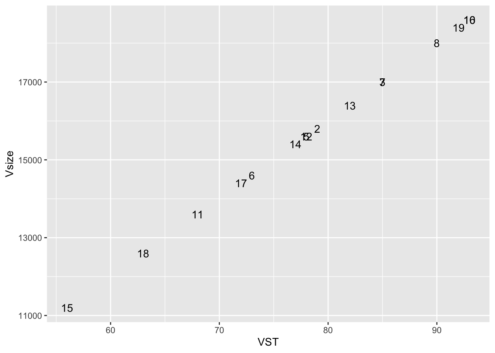

Main task
What is the score for each participant, and what is their vocabulary size?
In order to answer these questions we need to do a variety of things.
In the session, we decided it would be fun to compare and contrast the tidyverse and base r methods to answer these questions. The objects with tv at the end are the tidyverse methods, while the objects with b at the end are base R.
the next task is to remove anyone who has NA for a vst test
# remove NAs (n should = 16) (any row that has an NA anywhere)
# Tidyverse will drop a row where ANY column has an NA
vst_data_tv1 <- vst_data_tv %>%
drop_na(vst.q1)
# Slicing with Base R - looking for NA in the second column only
# Slicing is a technique used by other programming language (with different syntax) - so it can be a useful method but harder to read
vst_data_b1 <- vst_data_b[!is.na(vst_data_b[,2]),]in case you want to go through some potentially redundant steps here they are
compute sums for each ten questions that make up a 1k freq band rename datvst_summed_by_level's columns to appropriate names
the next step is to create a table/df/tibble with three columns: person, total score (VST), and total vocabulary (Vsize)
# create a table of person, total score, total vocab size
# the vst ranges from 0 - 100. let's calculate each subject's score on the vst.
# tidyverse method one
vst_data_tv2 <- vst_data_tv1 %>%
rowwise(ID) %>%
mutate(VST = sum(c_across(contains('vst'))))
# tidyverse method two (via Micky Vale)
vst_data_tv2 <- vst_data_tv1 %>%
mutate(VST = rowSums(select(., contains('vst'))))
# glue it into a df.
finalResults_tv <- tibble(person = vst_data_tv1$ID, VST = vst_data_tv2$VST)
# baseRisbestR
# will need to use apply here because this needs to be done row-wise (i think?)
vst_data_b2 <- apply(vst_data_b1[,2:ncol(vst_data_b1)], 1, sum)
finalResults_b <- data.frame(person = vst_data_b1$ID, VST = vst_data_b2)
finalResults_b <- data.frame(person = vst_data_b1$ID, VST = vst_data_b2, Vsize = vst_data_b2*200)finalResults2 <- vst_data_tv1 %>%
mutate(person = ID, VST = rowSums (select(., contains ('vst'))), Vsize = VST * 200) %>%
select(person, VST, Vsize)add Vsize (this is also done above - we adjusted the above code after doing the below). This shows you that Vsize was just VST*200.
# add one more column which is vsize
# what is vsize? Well, it looks like each correct answer is indicative of 200 words or something like that
# so we can easily create a new column by multiplying VST*200
# we can actually use mutate here...
finalResults_tv <- finalResults_tv %>%
mutate(Vsize = VST * 200)
# what about base R?
finalResults_b['Vsize'] <- finalResults_b$VST*200
# this is probably a better way to to do it this way
finalResults_b$Vsize <- finalResults_b[,'VST'] * 200plots for fun
ggplot(finalResults_b, aes(x = VST, y = Vsize)) +
#geom_point() +
geom_text(aes(label = person))
Your final dataframe should look like this:
person VST Vsize
01 79 15800
02 85 17000
03 78 15600
04 73 14600
05 85 17000
06 90 18000
07 93 18600
08 68 13600
09 78 15600
10 82 16400
11 77 15400
12 56 11200
13 93 18600
14 72 14400
15 63 12600
16 92 18400